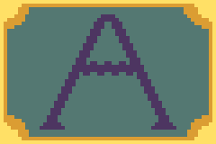

Το κουμπί play.
Κάνοντας click/κλικ στη συγκεκριμένη εικόνα ο χρήστης ξεκινάει το παιχνίδι.

Το κουμπί επιλογής Α.
Κάνοντας click/κλικ στη συγκεκριμένη εικόνα ο χρήστης επιλέγει την πρώτη απόφαση σε ορισμένα σημεία της ιστορίας.

Το κουμπί Next.
Κάνοντας click/κλικ στη συγκεκριμένη εικόνα ο χρήστης προχωράει στο επόμενο κομμάτι της ιστορίας.

Το κουμπί επιλογής Β.
Κάνοντας click/κλικ στη συγκεκριμένη εικόνα ο χρήστης επιλέγει την δεύτερη απόφαση σε ορισμένα σημεία της ιστορίας.
Το κουμπί re-try.
Κάνοντας click/κλικ στη συγκεκριμένη εικόνα ο χρήστης επιστρέφει στο σημείο της ιστορίας που πρέπει να επιλέξει μία απόφαση.